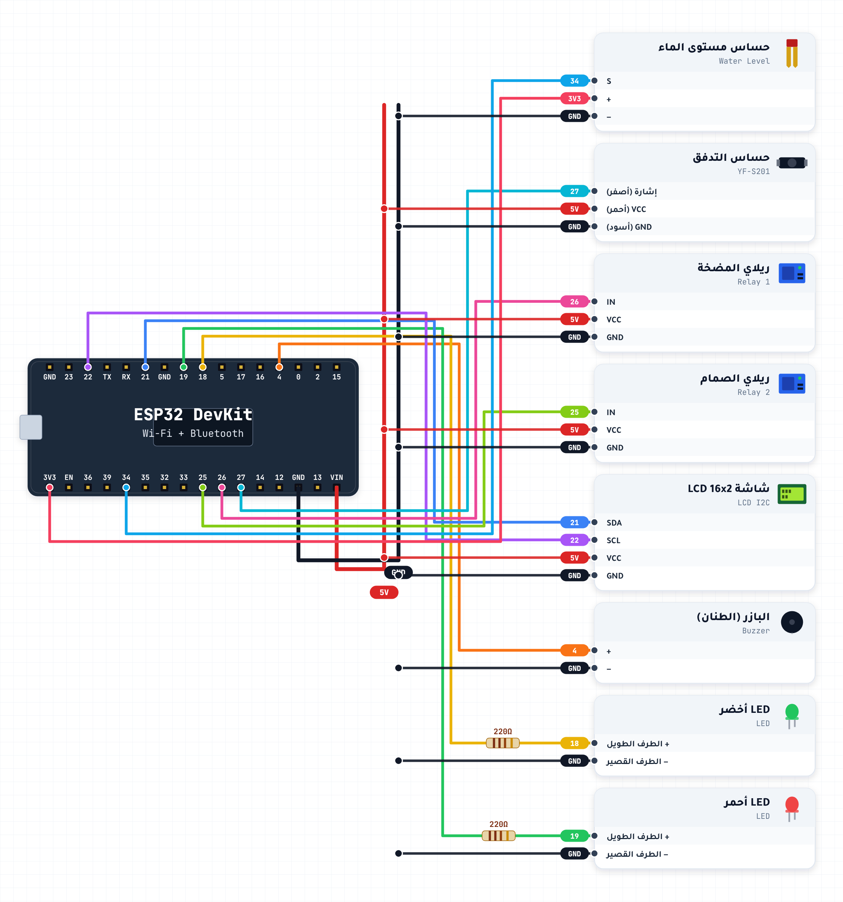

▶فيديو الشرح
ESP32 يراقب مستوى خزان الآلة ويعيد تعبئته من الخزان الرئيسي، مع حماية المضخة من العمل على الفراغ.
1المكونات
ESP32 DevKitboardحساس مستوى الماءWater Levelحساس التدفقYF-S201ريلاي المضخةRelay 1ريلاي الصمامRelay 2شاشة LCD 16x2LCD I2Cالبازر (الطنان)BuzzerLED أخضرLEDLED أحمرLEDأسلاك توصيلJumper Wiresلوحة تجاربBreadboard
2مخطط التوصيل

اضغط على المخطط لتكبيره · نسخة SVG عالية الدقة
| القطعة | الطرف | يوصل إلى |
|---|---|---|
| حساس مستوى الماء | S | 34 |
| حساس مستوى الماء | + | 3V3 |
| حساس مستوى الماء | − | GND |
| حساس التدفق | إشارة (أصفر) | 27 |
| حساس التدفق | VCC (أحمر) | 5V |
| حساس التدفق | GND (أسود) | GND |
| ريلاي المضخة | IN | 26 |
| ريلاي المضخة | VCC | 5V |
| ريلاي المضخة | GND | GND |
| ريلاي الصمام | IN | 25 |
| ريلاي الصمام | VCC | 5V |
| ريلاي الصمام | GND | GND |
| شاشة LCD 16x2 | SDA | 21 |
| شاشة LCD 16x2 | SCL | 22 |
| شاشة LCD 16x2 | VCC | 5V |
| شاشة LCD 16x2 | GND | GND |
| البازر (الطنان) | + | 4 |
| البازر (الطنان) | − | GND |
| LED أخضر | + الطرف الطويل | 18 عبر مقاومة 220Ω |
| LED أخضر | − الطرف القصير | GND |
| LED أحمر | + الطرف الطويل | 19 عبر مقاومة 220Ω |
| LED أحمر | − الطرف القصير | GND |
3الكود
المكتبات المطلوبة (من Arduino IDE ← Sketch ← Include Library ← Manage Libraries):
- LiquidCrystal I2C — Frank de Brabander
/* المستوى المتطور — المشروع 1: نظام إدارة وتوزيع السوائل الصناعي الذكي (ESP32) كتاب: 38 مشروع في شهر — لؤي النصري (@robotlouay) التجهيز: لوحات ESP32 في Arduino IDE (Boards Manager → esp32) + مكتبة LiquidCrystal I2C التوصيل: حساس مستوى الماء (خزان الآلة) S → GPIO34 ، + → 3.3V ، − → GND حساس التدفق YF-S201: الأصفر → GPIO27 ، الأحمر → 5V ، الأسود → GND ريلاي 1 (المضخة) IN → GPIO26 ريلاي 2 (الصمام المغناطيسي) IN → GPIO25 Buzzer (+) → GPIO4 LED أخضر ← 220Ω ← GPIO18 LED أحمر ← 220Ω ← GPIO19 LCD I2C: SDA → GPIO21 SCL → GPIO22 VCC → 5V GND → GND التغذية: بطارية 7.4V → منظم 5V → VIN للـ ESP32 والريلاي ، والمضخة من البطارية عبر الريلاي */ #include <Wire.h> #include <LiquidCrystal_I2C.h> const int LEVEL_PIN = 34, FLOW_PIN = 27; const int PUMP_RELAY = 26, VALVE_RELAY = 25; const int BUZZER_PIN = 4, GREEN_LED = 18, RED_LED = 19; // معايرة مستوى الخزان (قراءات ESP32 من 0 إلى 4095) const int LEVEL_EMPTY = 300; // قراءة الخزان فارغاً const int LEVEL_FULL = 2600; // قراءة الخزان ممتلئاً const int START_FILL = 30; // % ← بدء التعبئة const int STOP_FILL = 90; // % ← إيقاف التعبئة const int CRITICAL = 10; // % ← إنذار نقص حرج const unsigned long DRY_RUN_MS = 15000; // المضخة تعمل بلا تدفق = خزان رئيسي فارغ LiquidCrystal_I2C lcd(0x27, 16, 2); volatile unsigned long pulses = 0; bool filling = false, fault = false; unsigned long fillStart = 0, lastCalc = 0; float flowLmin = 0; void IRAM_ATTR onFlowPulse() { pulses++; } int levelPercent() { long sum = 0; for (int i = 0; i < 20; i++) sum += analogRead(LEVEL_PIN); int raw = sum / 20; return constrain(map(raw, LEVEL_EMPTY, LEVEL_FULL, 0, 100), 0, 100); } void setFilling(bool on) { filling = on; digitalWrite(PUMP_RELAY, on); digitalWrite(VALVE_RELAY, on); if (on) fillStart = millis(); } void setup() { Serial.begin(115200); pinMode(PUMP_RELAY, OUTPUT); pinMode(VALVE_RELAY, OUTPUT); pinMode(BUZZER_PIN, OUTPUT); pinMode(GREEN_LED, OUTPUT); pinMode(RED_LED, OUTPUT); pinMode(FLOW_PIN, INPUT_PULLUP); attachInterrupt(digitalPinToInterrupt(FLOW_PIN), onFlowPulse, FALLING); setFilling(false); lcd.init(); lcd.backlight(); } void loop() { unsigned long now = millis(); int level = levelPercent(); if (now - lastCalc >= 1000) { // حساب التدفق كل ثانية noInterrupts(); unsigned long p = pulses; pulses = 0; interrupts(); flowLmin = p / 7.5; // YF-S201: التردد(Hz) / 7.5 = لتر/دقيقة lastCalc = now; // منطق التحكم if (!fault) { if (!filling && level <= START_FILL) setFilling(true); if (filling && level >= STOP_FILL) setFilling(false); if (filling && now - fillStart > DRY_RUN_MS && flowLmin < 0.2) { // حماية المضخة setFilling(false); fault = true; } } // العرض lcd.setCursor(0, 0); lcd.printf("Level:%3d%% %s ", level, filling ? "FILL" : "OK "); lcd.setCursor(0, 1); if (fault) lcd.print("FAULT: NO WATER "); else lcd.printf("Flow:%5.1f L/m ", flowLmin); Serial.printf("level=%d%% flow=%.2f filling=%d fault=%d\n", level, flowLmin, filling, fault); } bool alarm = fault || level <= CRITICAL; digitalWrite(GREEN_LED, !alarm); digitalWrite(RED_LED, alarm ? (now / 250) % 2 : LOW); digitalWrite(BUZZER_PIN, alarm ? (now / 500) % 2 : LOW); // Buzzer نشط }
هذا المشروع يعتمد على مكتبات أو لوحات غير متوفرة في mBlock 5، لذلك نستعمل Arduino IDE. انسخ الكود من تبويب Arduino IDE.
4كيف يعمل؟
- حساس المستوى يعطي النسبة المئوية
- تحت 30% → المضخة والصمام يعملان
- فوق 90% → إيقاف
- لا تدفق خلال 15 ثانية → عطل وإنذار
⚠ قبل توصيل الكهرباء: راجع كل سلك مع الجدول أعلاه، وتأكد من عدم وجود تماس بين 5V و GND. اختر اللوحة والمنفذ الصحيحين من قائمة Tools في Arduino IDE.